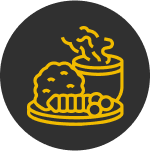
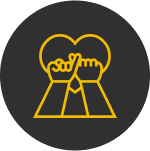

든든한 솥밥을 위해 지키고, 키워가는 것들
한솥은 ‘따끈한 도시락으로 지역사회에 공헌한다’ 라는 기업이념 아래,고객이익을 최우선으로 하며 엄선된 좋은 식재료만 사용하는 대한민국 외식종합기업 시장을 리드하는 글로벌 종합외식기업입니다.
-

따뜻한 솥밥
그 옛날, 마을잔치가 열리면 어머니들은 모두 솥을 걸었습니다.
따끈한 한 끼를 중심으로 친구가 되고,
연인이 되고, 가족의 마음에 온기가 넘치는 한 솥.
저희는 그 따끈한 한 끼의 힘을 믿습니다.
늘 고민하며 갓 지은 솥밥과 같은 한 끼를 대접하겠습니다. -

정직한 솥밥
건전하고 투명한 기업 운영을 통해
가맹점주에게 변함없이 사랑 받는 기업이기도 합니다.
고객에게, 가맹점주에게 무한한 신뢰와 사랑을 받는 것이
따뜻한 대한민국을 만들고, 인류사회발전에
조금이라도 기여하는 일이라고 믿기 때문입니다. -
건강한 솥밥
한솥은 식재료 앞에서는 한없이 까탈스럽습니다.
외식기업은 그 어떤 기업보다도 더
고객님을 소중하게 생각해야 한다는 것이 한솥의 신념입니다.
한솥의 도시락이 건강해야, 고객 또한 건강해질 수 있다는 믿음.
그것이 한결 같은 한솥의 초심입니다.
가격 이상의 가치가 담긴
다양한 메뉴를 확인해 보세요
#한솥의 베스트 셀러 #따끈한 집밥이 생각날 때 #화끈하게 스트레스
날리기 #건강을 위해
#반찬만 필요할 때 #추천 단체도시락
메뉴 더보기
덕후들이 인정한 JMT 조합
한솥 꿀조합 레시피
한솥의 덕후들이 직접 인정한
한솥 메뉴의 꿀조합 레시피!
오늘 하루는 무엇을 먹어야
할지,
매일매일 메뉴 선정으로 인해
고민하는 분들께
소개합니다.
꿀조합 더보기